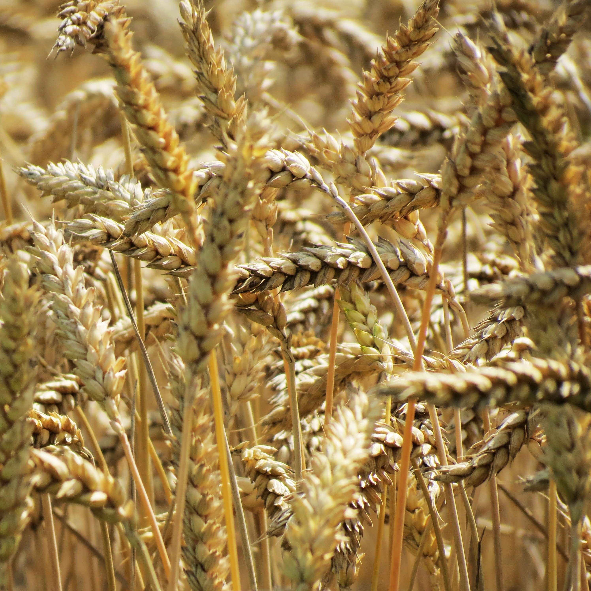
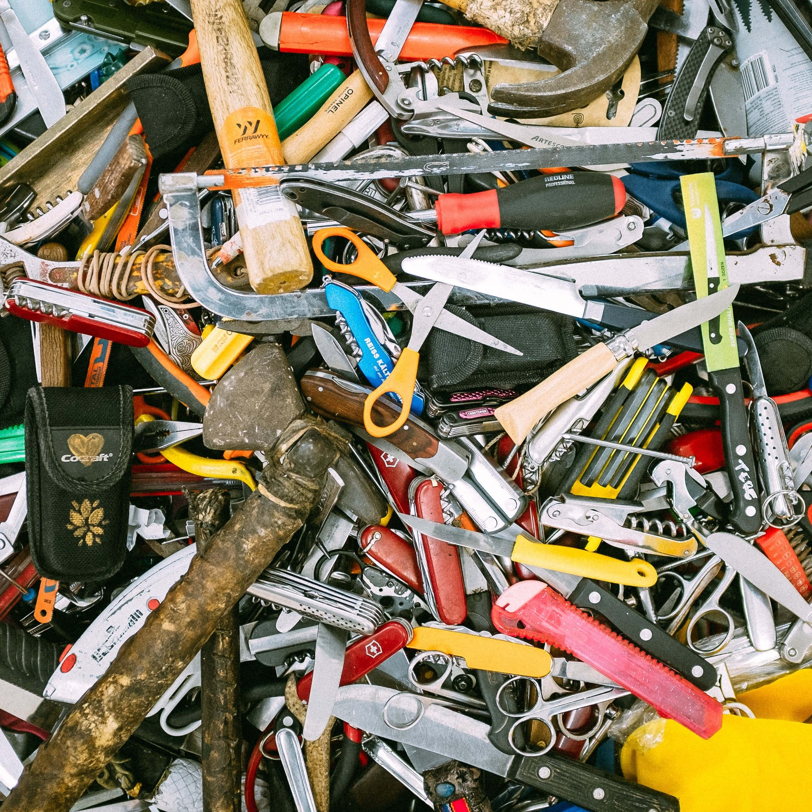

<!DOCTYPE html>
<html lang="en">
  <head>
    <title>Slip, Heave, Throw</title>
    <link rel="stylesheet" type="text/css" href="styles.css">
  </head>

  <body>
     
    <a href="index.html"> 
    
    
  </a> 
    </body>
  </html>
  
  <nav>
    <div class="navbar">
      <a class ="a" href="index.html">Story</a>
      <a class ="a" href="plot.html">Plot</a>
      <a class ="a" href="location.html">Location</a>
      <a class ="a" href="characters.html">Characters</a>
      <a class ="a" href="news.html">News</a>
      <a class ="a" href="contact.html">Contact</a>
    </div>
    </nav>
    </head>


<h1>Duchies of Aeranyth</h1>
<h2>Lalawen</h2>
  
  <p class="p1">Your original duchy, specializes in agriculture. The citizens are infamously poor compared to the rest of the country, and there are rumors that the Duke and Duchess are wealthy and use tax money for their luxury instead of supporting their people.</p>
    
<h2>Dwimma</h2>
  
  <p class="p1">Specializes in art, such as paintings and poetry. They are known to be peaceful, but there rumors that the Duke's personality is fake and is in fact much more violent.</p>
    
<h2>Uloreth</h2>
  
  <p class="p1">Specializes in weaponry. There are rumors that Duke and Duchess hire people based on income rather than skill.</p>
    
<h2>Gloeand</h2>
   
  <p class="p1">Specializes in technology. They are probably the poorest duchy, as Aeranyth closed itself from the world and the other duchies are scared Gloeand will force others to open the country.</p>

<h2>Fraleric</h2>
   
  <p class="p1">Specializes in business. Only the rich can afford to live here, with a long history of success. There are rumors that children of wealthy businesses are abused to make them the perfect heir.</p>